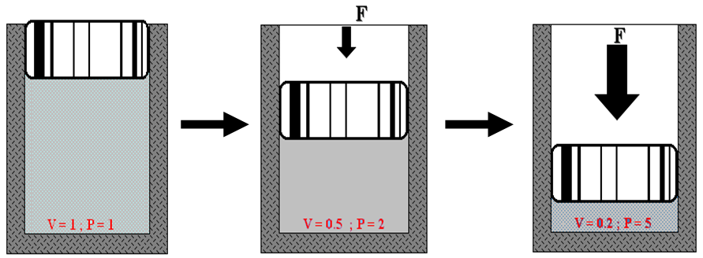

4.0 Pengenalan
Apabila angin dimampatkan, dua perkara berlaku: (1) kenaikan tekanan dan (2) haba banyak dihasilkan. Oleh kerana haba tidak diperlukan dalam sistem pneumatik & hidraulik, ia dikeluarkan menggunakan strip penyejuk pemampat. Pada peringkat akhir, air akan terhasil kerana air tidak boleh dimampatkan dan diperah keluar pada peringkat mampatan.
4.1 Persamaan Yang Berkaitan Dengan Udara Mampat
4.1.1 Tekanan
Terdapat 3 cara untuk mengukur tekanan dalam satu sistem iaitu kPa, psi dan bar. Kesemua udara akan kembali ke atmosfera berdasarkan persamaan unit di bawah.
1 Atmosfera = 100 kPa (1 Pascal = 1 N/m²)
1 Atmosfera = 14.5 psi
1 Atmosfera = 1.01325 bar
4.1.2 Hukum Boyle
Seperti juga gas, udara tidak mempunyai bentuk tertentu. Jika isipadu sesuatu jisim dikurangkan, tekanan akan bertambah kerana ianya berkadaran songsang terhadap isipadu. Jika isipadu dikurangkan sebanyak ½ kali, tekanan akan bertambah sebanyak 2 kali.

Rajah 4.1: Tekanan daya ke atas omboh — V=1,P=1 → V=0.5,P=2 → V=0.2,P=5
P₁ V₁ = P₂ V₂
4.1.3 Daya
Unit untuk daya ialah Newton.
Daya = Tekanan × Keluasan
4.2 Pemampat Udara
Pemampat udara memampatkan udara dari tekanan atmosfera ke satu tekanan yang lebih tinggi. Ini dilakukan dengan mengurangkan isipadu udara. Bagi kiraan, udara dianggap sebagai mengalami satu proses politropik. Udara yang dibekalkan mestilah bersih daripada minyak dan bahan cemar — penting dalam memproses makanan dan penyenggaraan peralatan.
Kegunaan Udara Termampat
4.3 Jenis-Jenis Pemampat
Pemampat udara boleh dibahagikan kepada dua kategori utama:
- Jenis Salingan — Omboh 1/2 peringkat, gegendang
- Jenis Putaran — Ram gelangsar, skru
- Aliran Jejari — Emparan
- Aliran Paksi — Gandar
4.3.1 Pemampat Jenis Anjakan Positif
Pemampat udara anjakan positif merupakan mesin dengan sekumpulan isipadu udara atau gas yang diletakkan di dalam bekas tertutup kerana tekanan akan meningkat apabila isipadu tersebut dikurangkan. Pemampat ini terdiri dari dua jenis utama:
a) Pemampat Omboh Satu Peringkat
Pemampat jenis ini menggunakan gerakan piston dalam silinder untuk memampatkan udara. Piston digerakkan ke bawah dan udara atmosfera disedut masuk ke ruang silinder melalui liang sedutan. Apabila injap sedutan terbuka, injap hantaran adalah dalam keadaan tertutup. Selepas itu proses hantaran bermula dengan piston bergerak ke atas, injap hantaran terbuka dan injap sedutan tertutup.

Rajah 4.2: Keratan rentas proses sedutan

Rajah 4.3: Keratan rentas proses hantaran

Rajah 4.4: Gambar sebenar pemampat salingan satu peringkat
b) Pemampat Omboh Dua Peringkat
Pemampat salingan dua peringkat memampatkan udara dengan menggunakan dua piston. Udara disedut ke dalam ruang atas piston dalam silinder pertama dan dihantar dengan satu tekanan ke ruang atas piston dalam silinder kedua untuk dimampatkan ke tekanan yang lebih tinggi. Penyejuk-antara digunakan untuk memindahkan haba sebelum udara memasuki silinder kedua.

Rajah 4.5: Keratan rentas pemampat dua peringkat

Rajah 4.6: Gambar sebenar pemampat dua peringkat
c) Pemampat Jenis Gegendang
Ianya sama seperti pemampat berpiston tetapi piston digantikan dengan pemasangan cakera dan gegendang. Gegendang disambungkan dengan cakera dan dinding silinder. Udara hanya masuk dan keluar setakat ruang di dalam gegendang sahaja.

Rajah 4.7: Pemampat salingan jenis gegendang
d) Pemampat Ram Gelangsar
Pemampat ini padat, berkelajuan tinggi, bebas dari pencemaran pelincir dan selalunya mempunyai kecekapan yang lebih tinggi dari pemampat jenis emparan tetapi tidaklah setinggi kecekapan pemampat jenis salingan. Pemampat jenis putaran boleh menghasilkan tekanan antara 400 kN/m – 800 kN/m. Keupayaannya boleh mencapai 100 m/min. Unsur asasnya ialah pemutar dan beberapa keping ram yang bebas melunsur secara jejarian di dalam satu selongsong.

Rajah 4.8: Gambar ram gelangsar

Rajah 4.9: Keratan rentas ram gelangsar
e) Pemampat Jenis Skru
Pemampat jenis skru menggunakan minyak pelincir sebagai pelindung daripada kebocoran. Ianya sesuai digunakan jika beban yang dikenakan padanya tidak berubah. Masalah pemampat jenis skru ialah angin mampat yang dihasilkan mempunyai kandungan minyak, oleh itu ianya memerlukan penapis minyak yang dipasang secara siri di bahagian keluaran.

Rajah 4.10: Pemampat udara jenis skru
4.3.2 Pemampat Jenis Dinamik
Udara atau gas yang dimampatkan melalui gerakan dinamik ram yang berputar menghasilkan halaju dan tekanan kepada udara atau gas yang mengalir. Aliran udara di dalam aliran paksi adalah sama arah dengan gerakan gandar, manakala di dalam pemampat emparan, pengaliran udara adalah sama arah dengan putaran jejarinya.
Pemampat jenis dinamik biasanya tidak dapat menghasilkan tekanan yang tinggi oleh itu ia tidak digunakan sebagai pemampat kepada sistem pneumatik & hidraulik. Walaupun ia dapat menghasilkan kuantiti udara yang tinggi tetapi ia hanya berfungsi sebagai kipas atau penghembus.
a) Jenis Aliran Paksi

Rajah 4.11: Pemampat jenis aliran paksi
b) Jenis Aliran Jejari

Rajah 4.12: Pemampat jenis aliran jejari (emparan)
4.4 Penghasilan Udara Bebas
4.4.1 Kelengkapan Sistem Mampatan Udara
Sistem mampatan udara memerlukan kelengkapan tertentu bagi memastikan kerja pemampatan dapat dilaksanakan dengan baik:

Rajah 4.13: Loji pemampat udara — susunan loji & unit utama
a) Turas Sedutan & Penyenyap
Setiap sistem pemampat memerlukan turas sedutan untuk mengeluarkan zarah-zarah kotoran sebelum udara memasuki liang masuk. Turas ini biasanya jenis kubang minyak atau elemen kertas yang memerlukan senggaraan atau gantian dari masa ke semasa. Satu penyenyap adakalanya diperlukan bagi melenyapkan kebisingan udara yang memasuki pemampat.
b) Tabung Udara
Fungsi tabung udara:
- Menapis udara yang masuk ke dalam sistem utama (Penapis Masukan)
- Menyimpan udara termampat bagi mengelakkan pemampat beroperasi secara berterusan

Rajah 4.14: Gambar tabung udara (air receiver tank)

Rajah 4.15: Simbol piawai tabung udara
c) Unit Servis
Unit servis terdiri daripada tiga komponen utama:

Rajah 4.16: Unit servis — Penapis Udara, Pengatur Tekanan, Pelincir

Rajah 4.17: Penapis udara

Rajah 4.18: Pengatur tekanan
Pengatur tekanan merupakan injap penurun yang memastikan tekanan kerja berkeadaan malar walaupun terdapat ketidakseimbangan dalam tekanan udara utama dan kadar penggunaan udara. Tekanan masukan hendaklah sentiasa lebih tinggi daripada tekanan keluaran.

Rajah 4.19: Pelincir
4.5 Penyahidratan Udara
Menurunkan suhu dan mengeringkan udara selepas proses pemampatan. Proses ini terbahagi kepada dua bahagian: Pendingin Lanjutan & Pengering Udara.
4.5.1 Pendingin Lanjutan
Pendingin lanjutan boleh dibahagikan kepada dua:
a) Unit Dingin Udara

Rajah 4.20: Unit dingin udara — lakaran

Rajah 4.21: Unit dingin udara — gambar sebenar
b) Unit Dingin Air

Rajah 4.22: Unit dingin air — lakaran

Rajah 4.23: Unit dingin air — gambar sebenar
4.5.2 Pengering Udara
Pengering udara boleh dibahagikan kepada tiga jenis utama:
a) Pengering Jenis Resapan
Menggunakan kimia jenis kelembapan cecair bagi menyerap air daripada udara. Setelah menyerap air, kimia ini akan menjadi cecair. Antara kimia yang selalu digunakan adalah urea, lithium dan kalsium klorida. Udara yang dimampatkan mengalir masuk dari bahagian bawah silinder penakung dan mengalir ke aras atas menerusi bahan penyerap sebelum udara kering dialirkan keluar.

Rajah 4.24: Unit pengering jenis resapan
b) Pengering Jenis Jerapan (Adsorption)
Menggunakan kaedah kimia bagi mengeringkan udara. Kaedah jerapan bermakna air daripada udara akan melekat pada permukaan kimia pengering yang digunakan. Bahan pengering biasanya terdiri daripada jel silika dan alumina teraktif yang diisikan ke dalam silinder. Udara basah masuk dari bahagian bawah dan keluar sebagai udara kering di bahagian atas.

Rajah 4.25: Unit pengering jenis jerapan
c) Pengering Bahan Pendingin
Udara yang telah dimampatkan kira-kira pada suhu 44°C masuk melalui salur masuk melalui paip. Udara basah mengalir terus melalui penyejuk udara-ke-udara dan terus ke pemisah air. Pada pemisah air, air yang terkumpul akan menitik ke bawah. Udara yang separuh kering dan sejuk dialirkan terus ke penyejuk "udara ke bahan penyejuk" dan keluar ke pemisah air kedua. Udara yang telah kering dan sejuk dialirkan pula ke penyejuk "udara ke udara" sebelum udara dialirkan ke sistem. Suhu yang keluar lebih kurang 2°C.

Rajah 4.26: Unit pengering bahan pendingin
Rumusan Topik 4 — Bahagian Teori
- Persamaan asas: P₁V₁ = P₂V₂ (Hukum Boyle) · Daya = Tekanan × Keluasan
- Unit tekanan: 1 atm = 100 kPa = 14.5 psi = 1.01325 bar
- 2 kategori pemampat: Anjakan Positif (Salingan, Putaran) & Dinamik (Jejari, Paksi)
- Kelengkapan sistem: Turas sedutan, Penyenyap, Tabung udara, Injap pelega, Unit servis
- Unit servis: Penapis udara + Pengatur tekanan + Pelincir
- Penyahidratan: Pendingin (Udara, Air) + Pengering (Resapan, Jerapan, Bahan Pendingin)